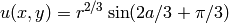
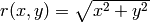
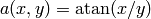

L-Shape (Elliptic)¶
Git reference: Benchmark lshape.
This is a standard adaptivity benchmark whose exact solution is smooth but contains singular gradient in a re-entrant corner.
Equation solved: Laplace equation
(1)
Domain of interest:

Exact solution:
(2)
where  and .
Code for the exact solution, bundary conditions, and weak forms:
// Exact solution.
static double fn(double x, double y)
{
double r = sqrt(x*x + y*y);
double a = atan2(x, y);
return pow(r, 2.0/3.0) * sin(2.0*a/3.0 + M_PI/3);
}
static double fndd(double x, double y, double& dx, double& dy)
{
double t1 = 2.0/3.0*atan2(x, y) + M_PI/3;
double t2 = pow(x*x + y*y, 1.0/3.0);
double t3 = x*x * ((y*y)/(x*x) + 1);
dx = 2.0/3.0*x*sin(t1)/(t2*t2) + 2.0/3.0*y*t2*cos(t1)/t3;
dy = 2.0/3.0*y*sin(t1)/(t2*t2) - 2.0/3.0*x*t2*cos(t1)/t3;
return fn(x, y);
}
// Boundary condition types.
BCType bc_types(int marker)
{
return BC_ESSENTIAL;
}
// Essential (Dirichlet) boundary condition values.
scalar essential_bc_values(int ess_bdy_marker, double x, double y)
{
return fn(x, y);
}
// Bilinear form corresponding to the Laplace equation.
template<typename Real, typename Scalar>
Scalar bilinear_form(int n, double *wt, Func<Scalar> *u_ext[], Func<Real> *u, Func<Real> *v, Geom<Real> *e, ExtData<Scalar> *ext)
{
return int_grad_u_grad_v<Real, Scalar>(n, wt, u, v);
}
Solution:

Final mesh (h-FEM with linear elements):

Final mesh (h-FEM with quadratic elements):

Final mesh (hp-FEM):

DOF convergence graphs:

CPU time convergence graphs: